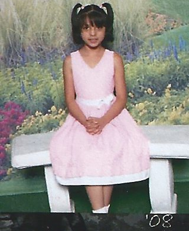
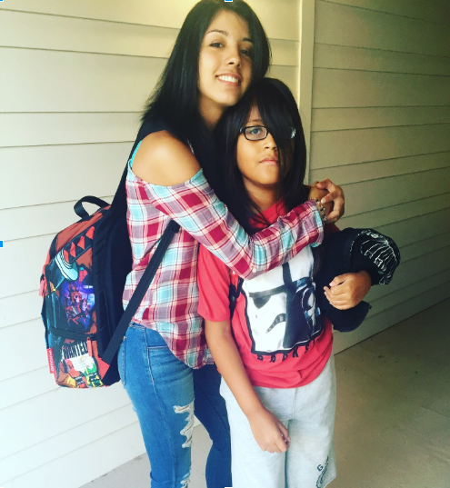
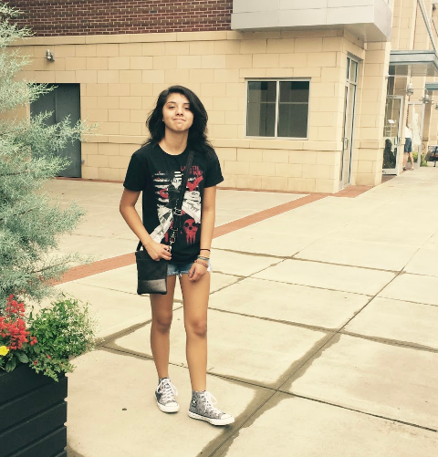

I was born in Los Angeles, California and only lived there for two years, so I don't remember much about it. I've lived in South Carolina for most of my life. When I was seven years old I lived in Greer and went to Chandler Creek Elementary School. I had a really hard time trying to make friends at that school and I was always being bullied. One day the bullies were beating me up, I forgot why, and I had to go to the hospital. I couldn't really remember how I got there. When I woke up my parents were outside of the room screaming and yelling at the doctor for some reason, but I didn't care anymore. I was so sad and angry that I just wanted to go to sleep and never wake up, but then I met a girl who had changed my life. Her name was Elizabeth Smiley, she had long bloody red hair, perfect pale white skin, and a bright smile. "Hi Melissa. I want to be your friend." she said. And she became my very first friend.
I am 15 years old now. My little brother is 9 and is about to turn 10 soon. I went to Mauldin High school last year but now I'm a student at J.L. Mann High. I am really interested in game design and all kinds of activites that have to do with making games because I want to be a creative director for video games after I graduate college. To many people I am an awesome artist. My little brother's name is Ocean, he is pretty tall for his age, has long silky hair, big eyes (but to bad he has to wear glasses), and right now he wants to be a sniper or something but I'm pretty sure he'll change his mind sooner or later about that. Right now I have good grades and I'd like to keep it that way if I want to go to Full Sail University(I hope I go to Full Sail). It's still my dream to become a creative director for video games.
In the future I plan on graduating high school with a diploma. I hope to be in Florida attending Full Sail University or University of Southern California and living in my own appartment. After graduating Full Sail/USC with a Game Development Bachelor's Degree of Science, I plan on working for a big gaming company and advancing to be a creative director. Then I want to make my first game and hope for it to be successful. I want to live in my own house somewhere in Los Angeles and hope to be known as Melissa Vazquez the greatest female game director in the world (or just hope everyone will enjoy my games at least).